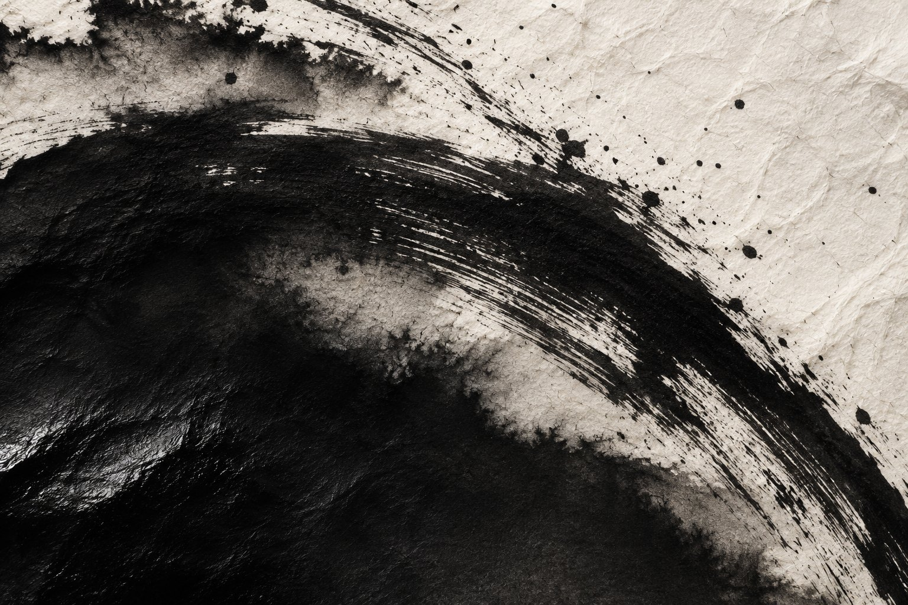

INK isART.
el archivo
Lo que eliges
llevar contigo.
La forma
de una huella.
Materia, línea y contraste.
Una exploración visual del universo de la tinta.
Imágenes ilustrativas y gráficos originales. No son tatuajes ni trabajos del profesional.
Un trazo es una decisión.
Una marca.
Mil lecturas.
En el tatuaje, la escala, el contraste y la posición cambian cómo se lee una pieza. El trazo y el espacio que lo rodea también cuentan.
Una imagen puede guardar un recuerdo, expresar una idea o formar parte de una identidad. Esa relación entre forma y significado abre tantas lecturas como personas.
Una reflexión general sobre el tatuaje. La voz y la trayectoria del artista se incorporarán cuando estén confirmadas.
El Bosque.
El punto de partida.
La identidad del artista
sigue por descubrir.
11670 El Bosque, Cádiz.
Ubicación pendiente de corroborar con el profesional antes de organizar una visita.
Buscar esta direcciónContacto por confirmar
Aún no hay un teléfono, correo o perfil social verificado. No se ofrecen reservas desde esta página.